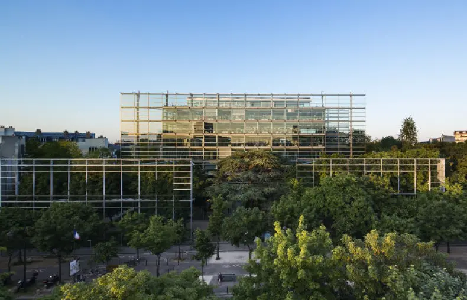

Détails de l'exposition
du 13 avril au 23 juin 2021

Fondation Cartier, 261 Bd Raspail, 75014 Paris
Horaires d’ouvertures
Lundi : Fermé
Mardi : 11h - 22h
Mercredi : 11h - 20h
Mercredi : 11h - 20h
Mercredi : 11h - 20h
Mercredi : 11h - 20h
Mercredi : 11h - 20h